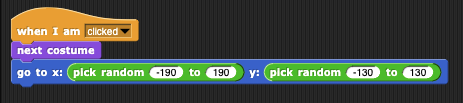

1. Find the pick random block in the green "Operators" palette, and click it several time to try it out.
2. Add a line of code so that every time alonzo is clicked, he not only turns, but also moves to a random position
(between -190 and 190 in the x direction and between -130 and 130 in the y direction). Use two
pick random blocks and one "go to x" block together at the end of your code to make this happen.

3. Click on Alonzo. If your script works Alonzo should face the other way and move to a random spot on the stage.
Try it out with Snap!